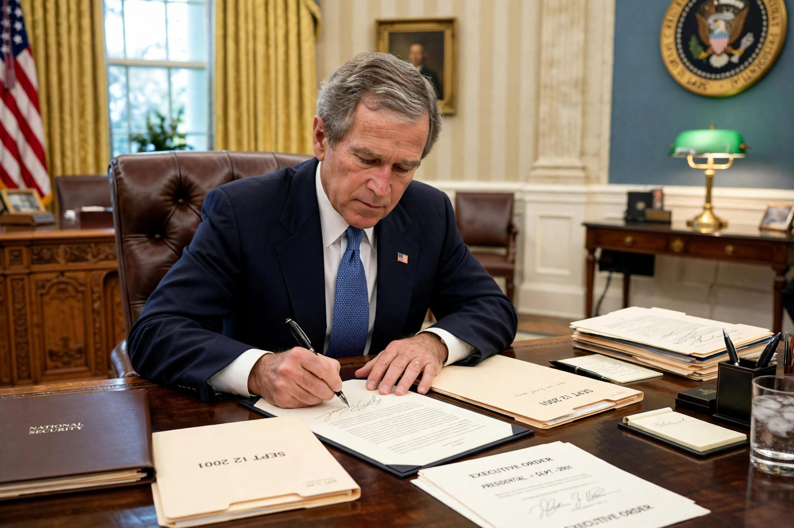

Authorization for Use of Military Force
| Authorization for Use of Military Force | |
|---|---|
| Enacted by | 107th United States Congress |
| Effective | September 18, 2001 |
| Citations | Pub. L. 107–40; 115 Stat. 224 |
| Senate vote | 98–0 |
| House vote | 420–1 |

The Authorization for Use of Military Force (AUMF; Pub. L. 107–40) is a joint resolution of the United States Congress passed on September 14, 2001, and signed into law by President George W. Bush on September 18, 2001, one week after the September 11 attacks. It authorises the President to use "all necessary and appropriate force" against those nations, organisations, or persons he determines planned, authorised, committed, or aided the terrorist attacks of September 11, or harboured such organisations or persons.
Text and scope
The operative clause of the AUMF is a single sentence of about sixty words. Unlike a formal declaration of war, it names no specific enemy state; instead, it delegates to the President the determination of which nations, organisations, and persons fall within its scope. Successive administrations have relied on the 2001 AUMF as the domestic legal basis for military operations against al-Qaeda, the Taliban, and "associated forces", including the Islamic State, in Afghanistan, Iraq, Syria, Yemen, Somalia, and elsewhere — a breadth of application that has drawn sustained criticism from members of Congress and legal scholars who argue the resolution has been stretched far beyond its original context.
Related authorizations
A separate Iraq-specific authorisation, the Authorization for Use of Military Force Against Iraq Resolution of 2002, provided the legal basis for the 2003 invasion of Iraq. Earlier precedents include the Gulf of Tonkin Resolution of 1964 and the declarations of war issued during the Second World War. The War Powers Resolution of 1973 forms the broader statutory backdrop to debates about the allocation of war powers between Congress and the President.
Repeal efforts
Congress has repeatedly debated repealing or replacing the 2001 AUMF, and has voted to repeal the 2002 Iraq AUMF, but as of the mid-2020s the 2001 authorisation remained in force and continued to be cited by the executive branch. Representative Barbara Lee of California, the sole vote against the resolution in 2001, became a leading advocate of its repeal.
See also
Casus belli · Surrender (military) · Armistice of 11 November 1918
Categories: United States federal defense and national security legislation · War on Terror